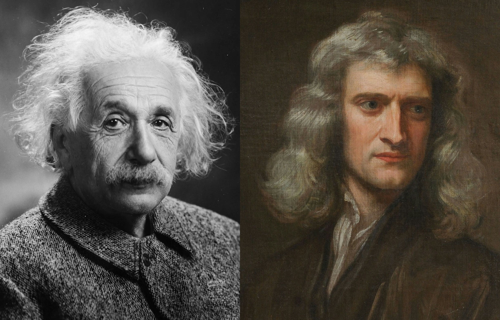

There are many excellent posts about what are the common traits among effective researchers. I summarize some of the critical points:
- Passion - To be great, you need to ***know what is your passion***. Knowing what you are passionate already makes you halfway. Because passion defines your goal. With a clear goal, motivation, curiosity and creativity are not far away. Einstein dreams to propose a unified field theory when he is in his mid-20s. Edison dreams to create source of light when he is young. Martin Luther King dreams of equality. Saying "I want to invent some technology" or "I want to contribute something" is not sufficient, you are still very vague with what you exactly wanna do. Probably some guy who said "I will make the best sushi that makes people very happy and feels peaceful" is much better, nobler than you. What is your passion? What do you want to *exactly* do? Unfortunately, not many people, even Ph.D. students know their passion exactly. Fun is NOT passion; fun is ephemeral, short-termed, and often cannot really fuel your energy in long-term. Fulfilling or meaningful might be the better words. You should find something which you do and when you accomplish it, you feel really fulfilling and meaningful. Passion has a lot to do with what you believe or value. If you believe that AI can make a better world, then probably your passion is around AI. If you believe that VR is the future, then probably your passion is somewhat around it. The key point is you must do whatever you really passionate and believe in, AND NOT WHAT IS HOT OUT THERE. Why? You will see that without passion, sheer willpower will not lead you to any fruitful results. Afterall, all "great" results come 99% perspiration and 1% inspiration. Another key point is that there is really no such thing as HOT. Any topic, if done in the most sincere and diligent way, can, at the end, contribute significantly to our world.
- Diligence - without actions, passion is nothing. Once you know your passion, you need to work hard, I mean really hard. How hard? Even when you are showering, you are thinking about it. When you are eating, you keep thinking the solutions. When you are doing some work, you are always proactive and independent, rather than waiting people to ask you to do something or help you. If you feel you have a hard time to do this or you feel you are still “trying” to do it, please go back to 1 and re-ask about your passion. You must not feel forced but very willingly to do it. Why do we need to work hard? Because the outcome of diligence is skills, knowledge, and wisdom. Once you work hard, you will eventually gain these qualities required to do what you are passionate about. Research and science are very skillful work. You must be competent and not only passionate. To work hard, you must have some sort of self-discipline, allowing to self-motivate yourself and self-pushing yourself to the limits. Discipline and diligence come in a package. I do acknowledge that there are some jerks (called geniuses) who do not need to do anything but they seem to be perfect in everything they do (luckily I never met one). Let them be. As for the 99.99% of us who are mere mortals, we must work hard to obtain skills, knowledge, and wisdom. Once you obtain the skills, you can then proceed to “work smart” which will make your life much easier but with more fruitful results.
- Persistence- ok, you know your passion, and you work hard, but you just do not seem to get the results you want. This is the next thing you must have - persistence (or some guys called perseverance). You need to recognize that no difficult problem has been solved through only one trial. Roman wasn't built in a day. You must be willing to fail so many times. You must be persistent and truly believe what you do is right, and keep improving and doing it, until it is successful. Again, if you easily give up, please revisit 1 and ask yourself again. You are probably not doing what you really passionate about. The key point of persistence is your mental strength. There are many young guys who get easily frustrated when they do not get the results they want, and eventually quit. It is a guy who has rubbed a wood 99 times and he gives up. In fact, if he goes for 100 times, then he can start a fire. If you truly believe what you do, NEVER GIVE UP. KEEP DOING IT. A wise man once said, in the end, it really does not matter whether you reach the goal or not, what is more fulfilling is the journey and experience towards it.
- Hungry to Improve and Learn- never give up does not guarantee success if you keep repeating the same mistakes. A student can be very persistent and hard working but still not successful because he/she just keep doing the same way. He/she did not evaluate what is going wrong in the methodology, methodology in management and research. You must always stay alert, hungry and eager to improve and learn. You must have that natural hunger. Of course, you probably do not want to read related work one whole year but do not do anything. That’s not my meaning of being hungry to improve and learn. People who are hungry usually share four common traits: First, they wholeheartedly accept criticisms. They are open-minded. They felt sincerely thankful for whoever offering them (sometimes harsh) criticism. After all, whoever gives you criticism probably cares about you. As a great researcher, you should be able to focus, to listen attentively and to deeply think from various angles (often from an outsider perspective) what is the essence of those criticisms. Second is humility which fewer people talk about and it may be a bit not-so-obvious. You may ask, how is humility related to improvements. It does and in large extent. Imagine a glass of full water and you tried to pour more water, that water is likely to overflow. Even though you may have published several good papers, it does not mean you start to become a know-it-all guy, in fact, you only know so little. You should be humble, and in that way, knowledge and wisdom can flow onto you. Third is being proactive, i.e., you should seek a solution within yourself, and not blame others or make lame excuses. Changes start from you. If you put your mind on your environments, you are likely not gonna improve or learn anything from your failures. Typical excuses are "I am not a native speaker", "My professor sucks", "reviewers do not understand my work", "I already wrote that in my paper!", etc, etc. If you are doing these, please change quickly! Fourth is being attentive to details i.e., you should not overlook minor details in your research. Indeed, these minor details are what makes the difference between mediocre and great research. You should be able to spot these minor details that make your research goes wrong. Easier said than done, it requires super much intense training.
- Communication - ok, you got everything to be successful - indeed, if you do four of the above, you are probably 99% effective. This is your last step - you must be able to clearly articulate your idea - orally and written. It seems easy, but you know what, this is the step where almost all students struggle at, and some even failed here even their work is considerably good. Some quits. Science is very much an art of logical reasoning and persuasion, and thus you must clearly show the logic - what’s the research question, why it is important, is it new, why you choose to use this methodology, etc. The audience is all busy with limited attention, thus, you should be able to make your readers feel happy when talking with you or reading your articles - mostly this is done by minimizing the effort and cognitive pain that readers must do to read your paper by having a clear focus, and readers must feel they become smarter. The only way to become good at writing and presentation is to do a lot and get feedback from your mentors and audiences.
As you can see, passion is important because it provides you the drive to consistently do 2-5. The hidden principle indeed here is consistency, and what induces consistency is your passion (+ enough rest). This is the key secret - Doing 2-5 a month will not do you anything. Doing 2-5 for a year will make a slight difference. But doing 2-5 for 10 or 20 years will make a paramount difference. Function of consistency is exponential; it follows the power law. The earlier you know your passion, the more successful you are because this passion will fuel and explain your actions.
For more readings:
Some sincere comments from Takeo to his students - http://www-ui.is.s.u-tokyo.ac.jp/~takeo/writings/siggraph.html
A good read how a Ph.D. life is - http://www.pgbovine.net/PhD-memoir/pguo-PhD-grind.pdf